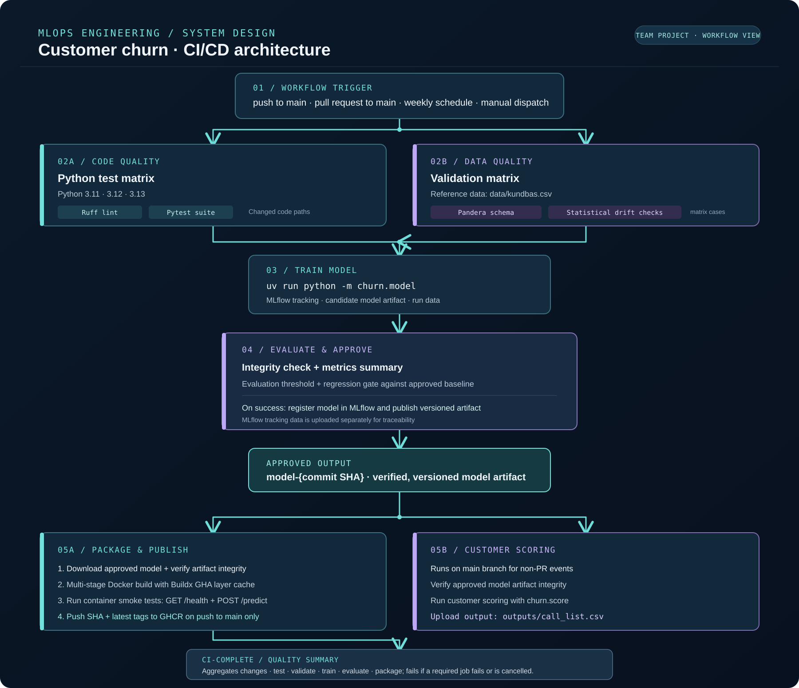

Programming & data
Python · SQL · Pandera · Datavalidering
Akademisk och projektbaserad erfarenhet ERFAN TAHMASEBI
ERFAN TAHMASEBI
MLOPS ENGINEER STUDENT · NACKADEMIN
Jag är Erfan Tahmasebi, MLOps Engineering-student med fokus på ML-serving, CI/CD, Docker och Kubernetes — från experiment till reproducerbara och driftsatta ML-tjänster.
01 / OM MIG
Jag studerar MLOps Engineering på Nackademin (2025-2028) och söker en LIA-plats där jag kan bidra i ett riktigt engineeringteam. Mitt intresse ligger i systemen runt modellerna: data som går att lita på, automatiserade flöden, containerisering, CI/CD och tydlig leverans.
Genom projekt har jag arbetat praktiskt med bland annat FastAPI, MLflow, datavalidering, Docker och GitHub Actions. Jag arbetar metodiskt, är nyfiken på hur system beter sig i drift och fortsätter bygga för att lära.
TEKNISKT FOKUS
02 / KOMPETENS
Teknikerna nedan beskriver studie- eller projekterfarenhet, inte påstådda expertkunskaper.
Python · SQL · Pandera · Datavalidering
Akademisk och projektbaserad erfarenhetscikit-learn · MLflow
Akademisk och projektbaserad erfarenhetFastAPI · ML-serving · Pandera · Datavalidering
Projektbaserad erfarenhetDocker · GitHub Actions · Kubernetes · kind
Kubernetes: individuellt utbildningsprojekt med Deployments, Services, probes och rolling updates03 / UTVALDA PROJEKT
GRUPPPROJEKT · CI/CD
En utbildningsmiljö för kundbortfallsprognoser där teamet byggde ett ML-flöde med fokus på kvalitet och leverans. Mina fem godkända och mergade pull requests omfattade statistisk datadrift, leveransverifiering, multi-stage Docker-byggen, layer caching, smoke tests, GHCR-publicering, modellmetadata/lineage och Ruff i CI.
Resultaten är teamets projektresultat. Mina individuella bidrag anges ovan.
Öppna repository ↗TEKNISK ARKITEKTUR / CI-CD-FLÖDE

FASTAPI · DOCKER · KUBERNETES
FastAPI, MLflow, datavalidering och Docker. Repon dokumenterar även mitt individuella Kubernetes-mini-projekt med kind, probes och rolling updates. Churn-pipelinen är grupparbete.
Repository ↗ · Live CI-status ↗INDIVIDUELLT PROJEKT · PYTHON · FASTAPI
Jag utvecklade hela applikationen individuellt med en separat FastAPI-backend och Streamlit-frontend. Integrerade OpenRouteService för ruttdata och Folium för interaktiv kartvisning.
Repository ↗ · Live CI-status ↗EDGE · MQTT · GRAFANA
Miljöövervakning med Raspberry Pi Pico W, Python, MQTT, datalagring och Grafana. Se projektets GitHub-repository ↗.
MCP · INTEGRATION
En kursdemo som utforskar MCP-integration och verktygsanslutning.
Repository ↗LLM · LANGCHAIN
Kursprojekt som utforskar mönster för LLM-applikationer med LangChain.
Repository ↗04 / KONTAKT
Vill du prata om en LIA-plats, ett projekt eller ett samarbete? Hör gärna av dig via e-post.
Skicka e-post →